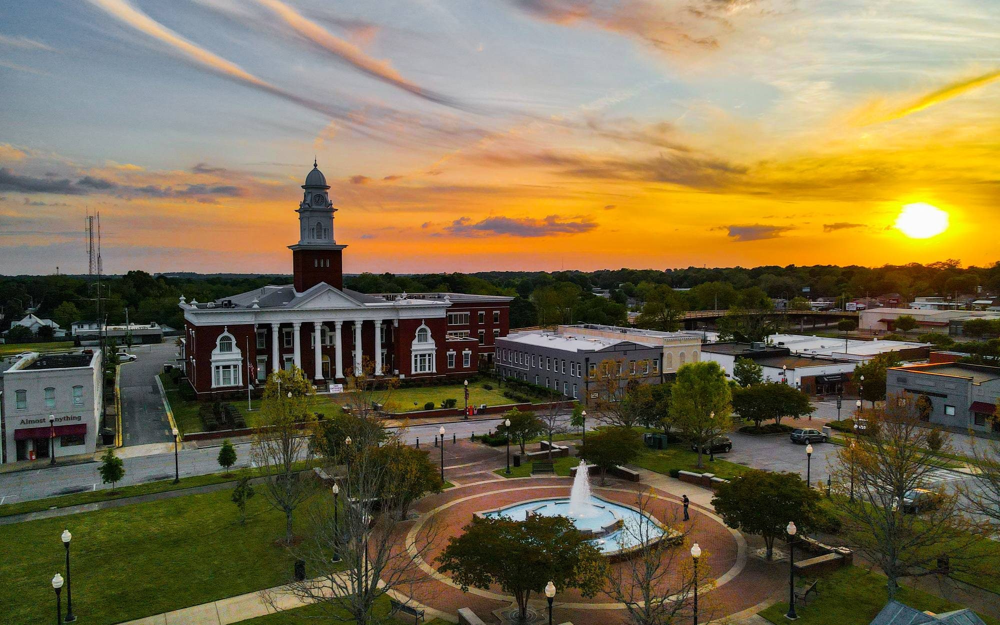
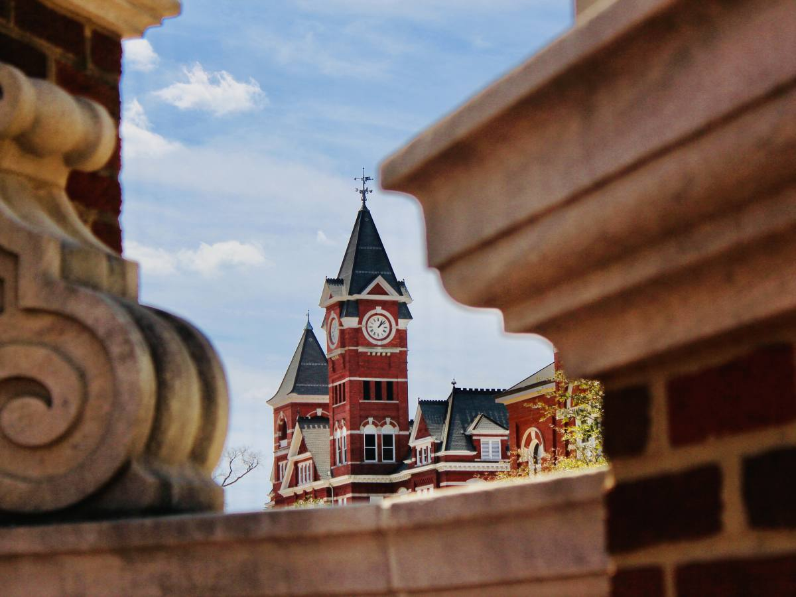

Home / Plan your visit
Easy to get to, easy to love.
Auburn-Opelika sits in the heart of the Southeast, just off Interstate 85, a laid-back drive from some of the region's liveliest cities.
Getting here
Five airports, one short drive.
Drive times are to Auburn-Opelika by car, depending on route and traffic.
Columbus Metropolitan Airport. A convenient regional option with commercial service through Delta Air Lines. Via US Highway 280 and I-85.
Montgomery Regional Airport. American, Delta and United, with nonstop service to Charlotte, Dallas/Fort Worth, Washington D.C., Atlanta and Houston, and a more relaxed experience than larger airports.
Hartsfield-Jackson Atlanta International, the broadest selection of flights. Groome Transportation runs a daily shuttle to Auburn-Opelika, and the Rental Car Center is open 24 hours via SkyTrain.
Birmingham-Shuttlesworth International. American, Delta, Southwest and United. Take US Highway 280, or I-65 S and I-85 N.
Dothan Regional Airport. Daily nonstop service to Atlanta via Delta Connection. Drive up US-431.
Flying private
Auburn University Regional Airport (KAUO) gives private aircraft and charter arrivals direct access to Auburn, Opelika and the surrounding East Alabama region, just minutes from town.
Private charters
For private airport transfers and group transportation, Bolt Transportation offers chauffeured service throughout Auburn and the region, including Atlanta, Birmingham, Montgomery and KAUO.
Getting around
Two downtowns, about 7 miles apart.
Once you arrive, getting around is simple. Uber and Lyft are popular and readily available, and you can also use rental cars, shuttles, black car services and group transportation.

Downtown Opelika. Photo: Dylan Stewart
Game day
War Eagle. Know before you go.
Whether it's your first trip to The Plains or you never miss a Saturday in Jordan-Hare, here are the basics.
Shuttles
Tiger Transit runs special gameday routes, free to all fans. Buses run for four hours before kickoff of SEC games and three hours before non-SEC games. For an 11 a.m. game, service begins at 8 a.m.
Parking
No parking on roadways, bike paths or sidewalks, or inside areas enclosed by bollards, posts, chains or fences. Vehicles blocking roads, hydrants or driveways are towed at the owner's expense.
Leaving the game
Postgame routes send traffic to I-85 and US Highway 280, with law enforcement at key intersections. Each university parking pass carries a QR code with the route from your lot.
Stop in and say hello
A front door in each town.
Downtown on Gay Street
The Auburn office also houses the Auburn-Opelika Art Showcase, an initiative highlighting local artists.
312 N Gay Street, Suite A, Auburn, AL 36830
334.501.3281
Inside the Opelika Chamber
In the newly renovated Opelika Chamber of Commerce building: a visitor experience built around immersive technology that combines inspiration with information.

Samford Hall. Photo: Nicholas Head
Official Visitors Guide
Insider tips, free.
Packed with insider tips, local recommendations and must-see attractions. Download it now, or have a copy mailed to you.